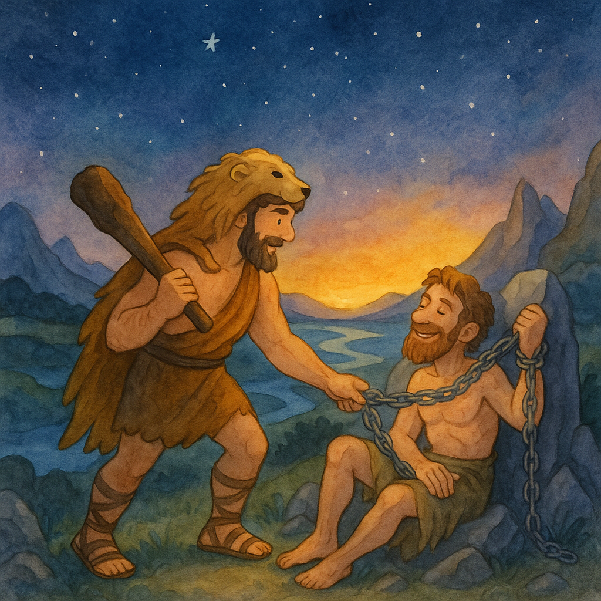
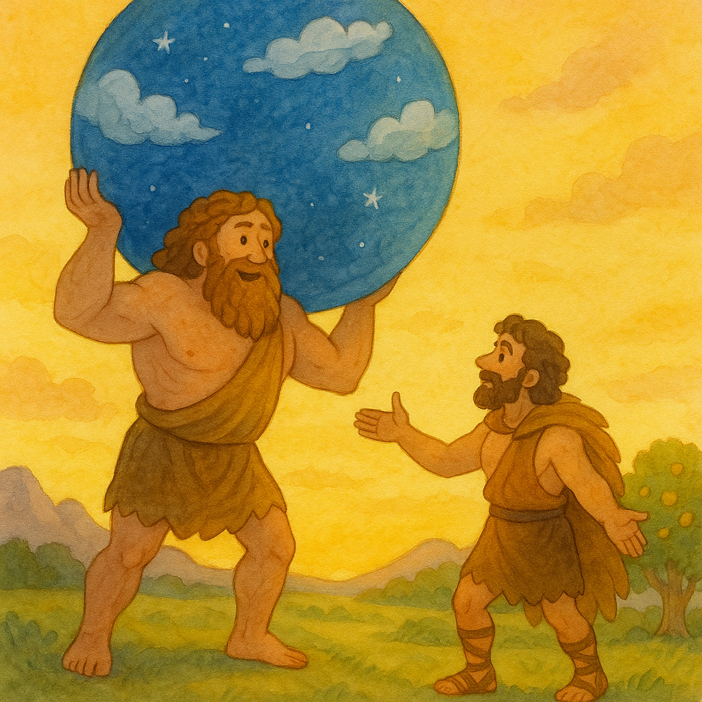
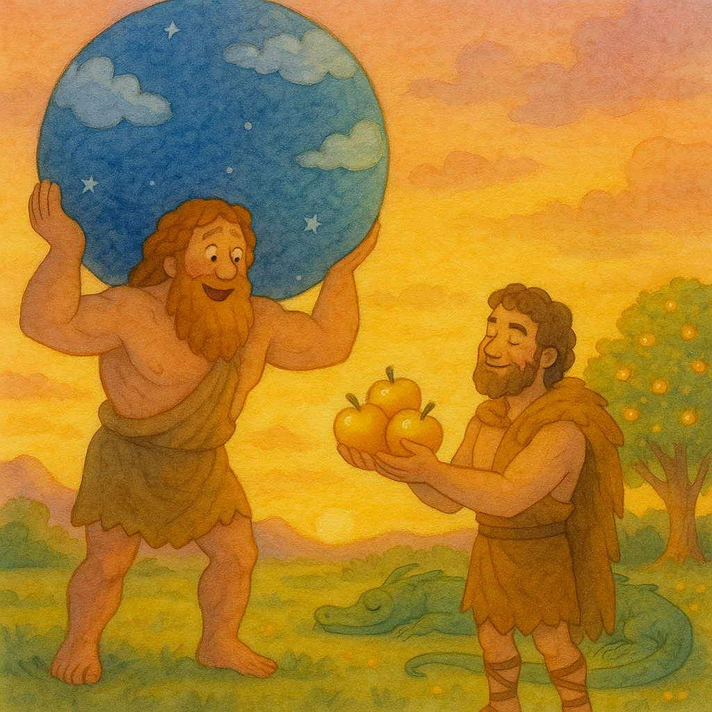

El undécimo trabajo de Hércules fue traer las manzanas de oro del Jardín de las Hespérides.
Hercules’ eleventh task was to bring back the golden apples from the Garden of the Hesperides.
Estas manzanas eran regalos de los dioses y crecían en un jardín mágico al final del mundo.
These apples were gifts from the gods and grew in a magical garden at the end of the world.
El jardín estaba cuidado por ninfas llamadas Hespérides y protegido por un dragón de cien cabezas.
The garden was cared for by nymphs called the Hesperides and guarded by a hundred-headed dragon.
Hércules caminó durante muchos días para encontrar el jardín.
Hercules walked for many days to find the garden.
Viajó por desiertos, montañas y ríos bajo el cielo estrellado.
He travelled through deserts, mountains, and rivers under the starry sky.
En su camino encontró a Prometeo, encadenado a una roca.
On his way he found Prometheus, chained to a rock.
Hércules rompió sus cadenas y lo liberó con bondad.
Hercules broke his chains and freed him kindly.

Prometeo le agradeció y le dijo cómo encontrar el jardín.
Prometheus thanked him and told him how to find the garden.
Finalmente, Hércules llegó al lugar donde vivía el titán Atlas.
At last, Hercules reached the place where the Titan Atlas lived.
Atlas sostenía el cielo sobre sus hombros y conocía el camino al jardín.
Atlas was holding the sky on his shoulders and knew the way to the garden.
Hércules le pidió ayuda para recoger las manzanas.
Hercules asked him for help to gather the apples.
Atlas aceptó si Hércules tomaba su lugar y sostenía el cielo por un tiempo.
Atlas agreed if Hercules would take his place and hold the sky for a while.
Hércules se preparó y tomó el peso del cielo sobre sus hombros fuertes.
Hercules got ready and took the weight of the sky on his strong shoulders.

Atlas, aliviado, fue al jardín y recogió las manzanas doradas.
Atlas, relieved, went to the garden and gathered the golden apples.
Pero cuando regresó, Atlas no quería volver a cargar el cielo.
But when he came back, Atlas didn’t want to take back the sky.
Le dijo a Hércules que él mismo entregaría las manzanas al rey.
He told Hercules that he would deliver the apples to the king himself.
Hércules sonrió con astucia y le pidió a Atlas que sostuviera el cielo un momento mientras se acomodaba.
Hercules smiled cleverly and asked Atlas to hold the sky just for a moment while he adjusted his cloak.
Atlas aceptó y volvió a levantar el cielo.
Atlas agreed and lifted the sky again.
En ese instante, Hércules tomó las manzanas y se marchó feliz.
At that moment, Hercules took the apples and left happily.

El dragón Ladón dormía tranquilo bajo los árboles dorados.
The dragon Ladon slept peacefully beneath the golden trees.
El cielo brillaba con luces rosadas y doradas al atardecer.
The sky glowed with pink and golden light at sunset.
Así terminó el undécimo trabajo de Hércules.
And so ended Hercules’ eleventh labour.